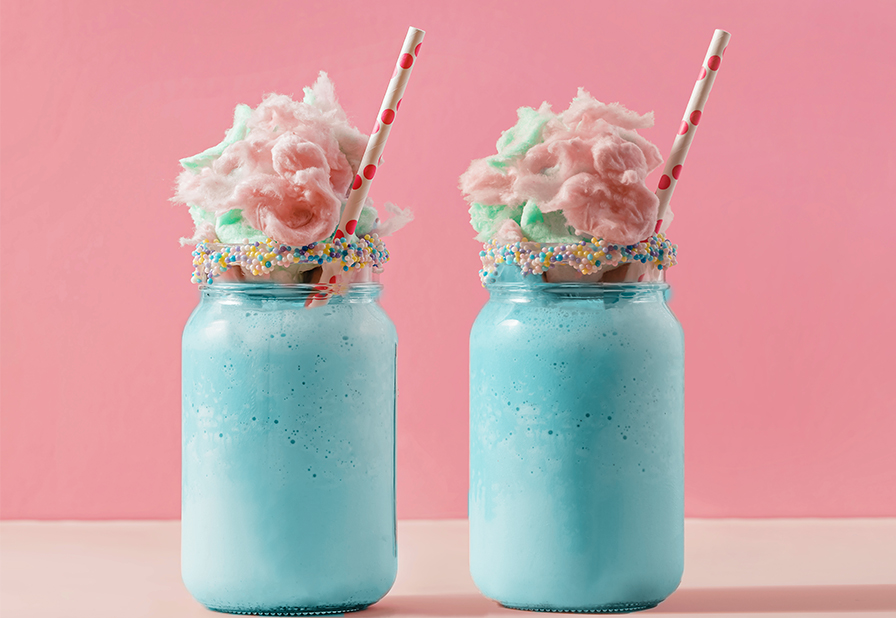
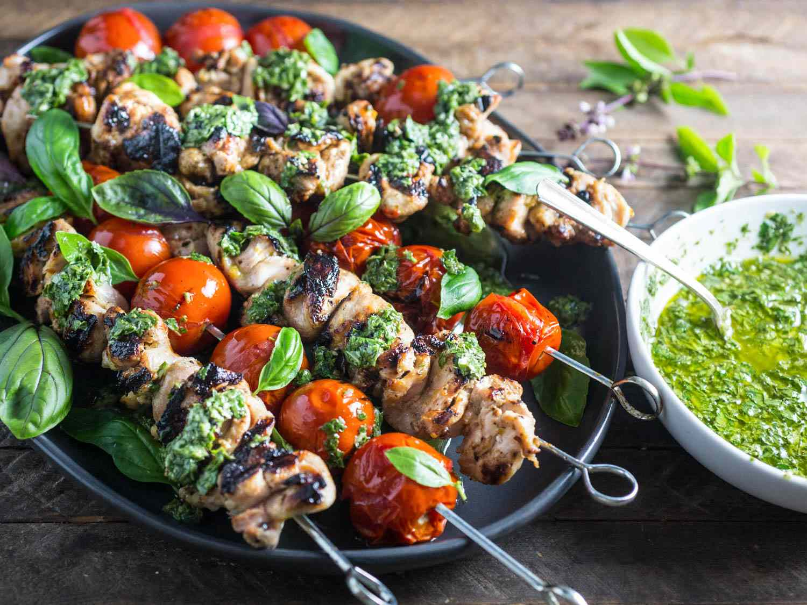
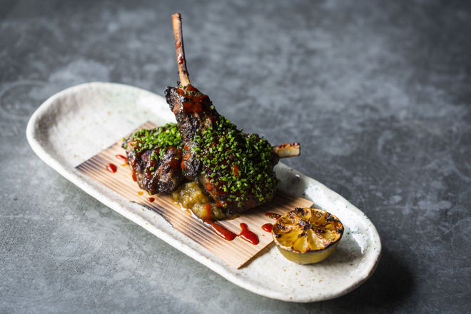

Gingerbread Cafe has the world finest coffee and baked goods. They source their ingredients straight from Candy Land! If you're feeling a savory option, they also serve sandwiches, pasta, and soups. This is a great stop to satisfy everyone in your group.
At Kandy’s Kabobs you get almost anything you can imagine grilled on a stick. Our menu features 567 different combinations. It is the best stop for on the go food, grab a kabob to eat as you walk. Don't forget to try our signature flamed marshmallow stick!
The Chocolate Mountain Kitchen is our fine dining location. Our assortment of fine cuisine is hand crafted by our chefs and tested by King Kandy himself. This is where you can expect a five star experience. This location requires reservations and enforces a dress code.
Book ReservationsCotton Candy Coffee From The Gingerbread Cafe
Pesto Kabobs From King Kandy's Kabobs
Lamb Chops From The Chocolate Mountain Kitchen
